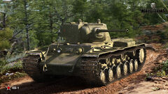

В праздник 23 Февраля желаю силы, воли к победе и мужества.
Пусть каждое начинание будет успешным, данное слово – нерушимым, поступок – достойным восхищения.
Немного о танках "Иосиф Сталин- ИС" и танках КВ
ИС-2
«Танки ИС» различает шесть вариантов серийных ИС-2 В послевоенное время ИС-2 были изменены с заменой двигателя, установкой приборов ночного видения, надкрылков гусеничного движителя-ИС-2М.ИС-3
ИС-3К — командирская версия танка ИС-3, оборудованная дополнительной радиостанцией Р-112 и зарядным устройством АБ-1-П/30. ИС-3М — модернизированная версия ИС-3.
ИС-7
Пушка имела вертикальный клиновой полуавтоматический затвор, оборудовалась однокамерным сетчатым дульным тормозом, системой управления огнём и механизмом заряжания с электроприводом.
